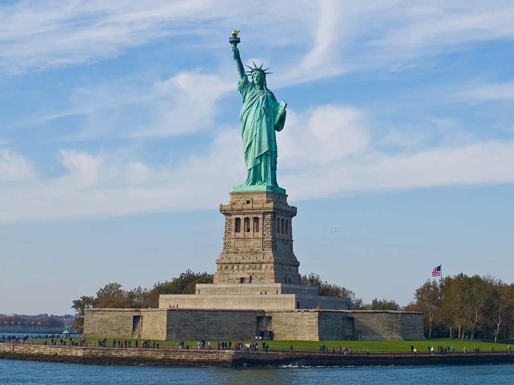

North America
United States
Big-city energy, vast landscapes and regional stories
5 attractions
5 countries to discover
Find a place that speaks to your curiosity. Explore its landmarks, local food, traditions and everyday adventures.

North America
Big-city energy, vast landscapes and regional stories

North America
Historic riverfronts, striking skylines and room to roam

North America
Ancient cities, vivid art and flavors rooted in place

North America
Cloud forests, volcanic landscapes and a pura vida welcome

North America
Reggae roots, waterfall country and Caribbean flavor